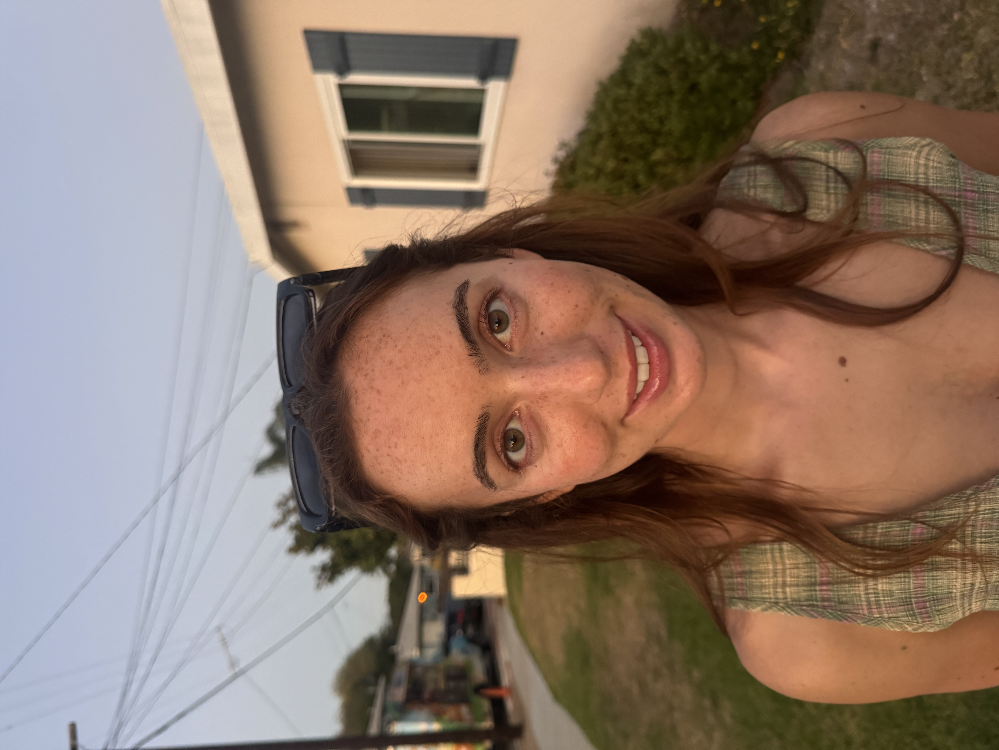

I am a third-year PhD student at Scripps Institution of Oceanography, UC San Diego, where I study climate science. I hold a B.S. in Oceanic and Atmospheric Science from UC San Diego (Class of 2023) and an M.S. in Oceanography from UC San Diego (Class of 2024). I have over two years of private tutoring experience working with high school and college students in math and physics, as well as experience designing and teaching calculus lesson plans for incoming graduate students.
My academic background covers a wide range of math and physics, from foundational algebra through advanced graduate-level courses in fluid dynamics and atmospheric physics. I believe the best way to learn math and physics is to build physical intuition, understanding why something works, not just how to apply a formula. I tailor each session to the student's pace and goals, focusing on developing a deep, transferable understanding of the material.
Interested in tutoring? Feel free to reach out by email or phone to discuss availability, rates, and how I can help.
Based in San Diego, CA · Available for in-person sessions at your home, or remote